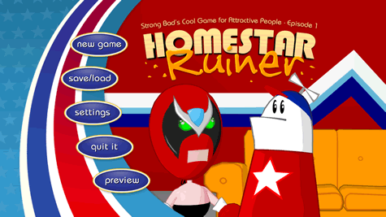
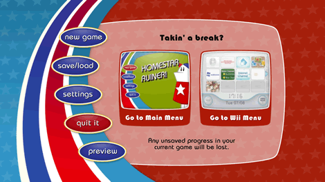

Select "Homestar Ruiner" from your Wii Menu. The Channel preview screen will load. To launch the episode, aim the Pointer at Start and press  . This brings up the main menu.
. This brings up the main menu.

The main menu gives you the following options:
- New Game: Start the game from the beginning, or play the tutorial.
- Save/Load: Save a game in progress, or open a saved game.
- Settings: Change the hint level, turn subtitles on/off, pop-up text, and adjust the audio settings.
- Quit It: Exit the game and return to the Wii Menu.
- Preview: See a preview of the next episode of Strong Bad's Cool Game for Attractive People.
To do any of these things, point at the appropriate heading and press
.
Point at New Game and press . You can choose to start the episode or play the tutorial. If you're new to this type of game or want the lowdown on how the controls work, start with the tutorial.
Point at Save/Load and press . You have three save slots and an "auto save" that kicks in at certain points in the game. Each auto save rewrites the one before it, so if you want to be able to go back and replay different parts of the game later on, remember to save in one of the other slots.
To save your game, point at Save next to one of the slots and press . To load a saved game, point at Load next to the appropriate slot, and press .
Point at Settings and press . This screen lets you change your game settings. To change these settings, point at the on-screen buttons and press . Here are your options:
- Give Hints: Sets the hint level, so if you get stuck while playing, the game knows when to give you a gentle nudge in the right direction.
- Subtitles: Turns on/off the subtitles that appear while characters are talking.
- Pop-up Text: Turns on/off the text that appears when you move the Pointer over an object that Strong Bad can interact with. (Even with pop-up text turned off, the Pointer will animate when you move it over something that can be used.)
- Music: Sets the volume of the game's background music.
- Voice: Sets the volume of the spoken dialogue.
- Sounds: Sets the volume of the game's sound effects (such as footsteps).

Point at Quit It and press . This screen allows you to exit the game. You can choose to return to the game's main menu or to the Wii Menu.
Point at Preview and press to watch a preview of the next episode of Strong Bad's Cool Game for Attractive People.